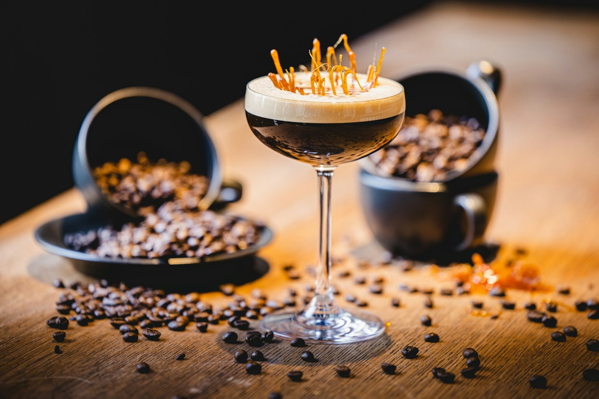
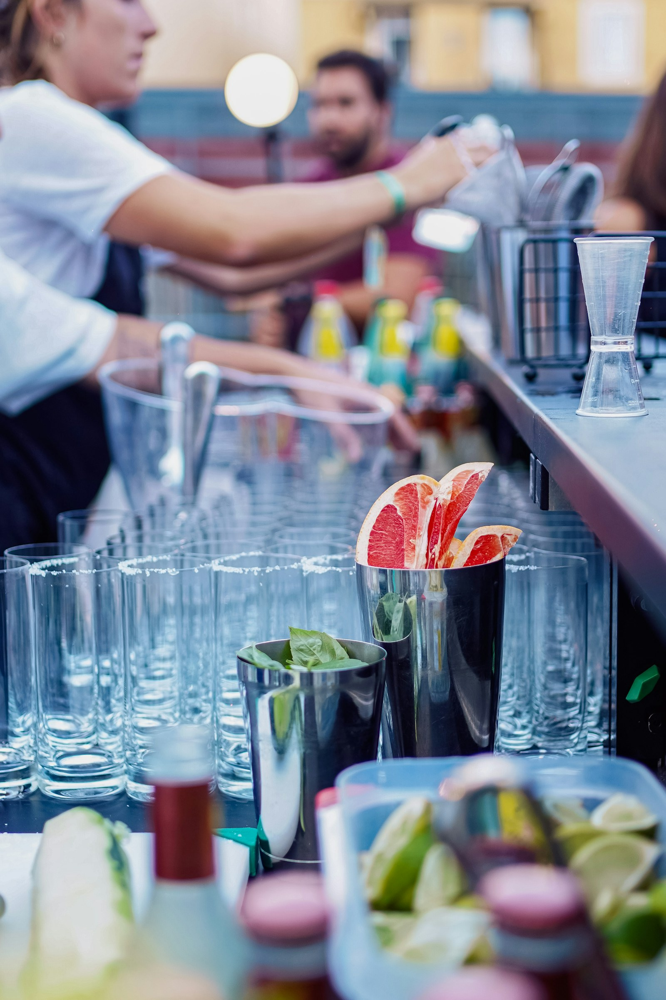
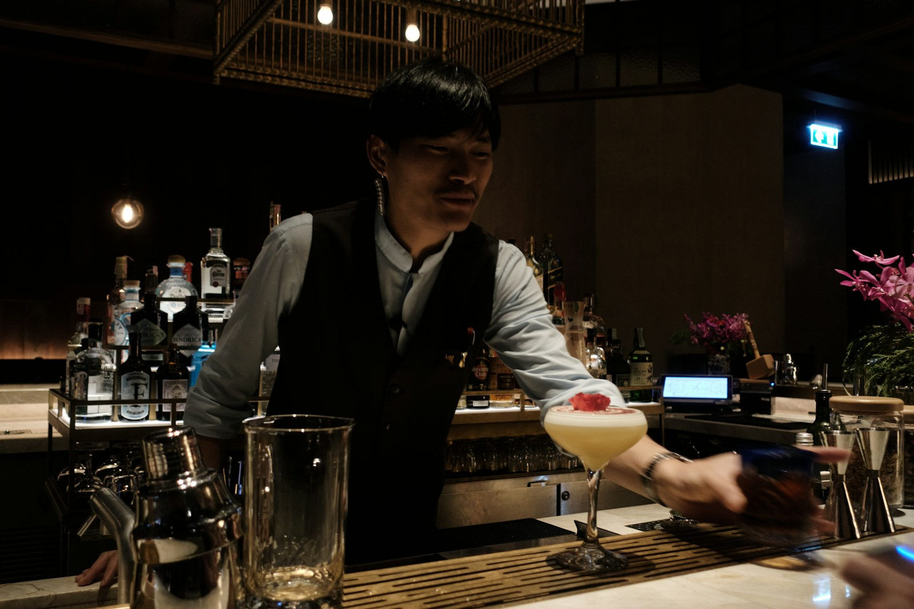
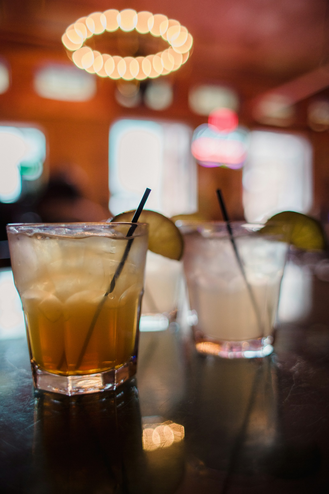

IL RITUALE
L'aperitivo
Il momento in cui la giornata cambia passo.
 HENDRIX BAR
Vieni a trovarci
HENDRIX BAR
Vieni a trovarci
Ci sono posti in cui passi.
E posti in cui ti fermi.
Benvenuto all'Hendrix.
È nelle persone che incontri, nelle chiacchiere che si allungano, in quel momento in cui decidi di restare ancora un po'.
Nel cuore di Piazza dei Signori, Hendrix è un punto d'incontro tra il ritmo della città e il piacere di prendersi il proprio tempo.
Scopri la nostra storiaLe serate migliori non si programmano. Succedono.HENDRIX BAR — UN POSTO DA VIVERE
Dal primo aperitivo all'ultimo brindisi: ogni momento ha il suo ritmo.

Il momento in cui la giornata cambia passo.

Una piazza, tante persone, infinite storie.

Classici, nuove idee e il piacere di scegliere.
Il centro di Padova, visto da un altro punto di vista.
Spritz, cocktail e gin tonic: scegli come iniziare. Al resto ci pensa la serata.
Scopri le novità su Instagram Per il menu completo e i prezzi aggiornati, chiedi direttamente al locale.
Piazza dei Signori, 38
35139 Padova, Italia